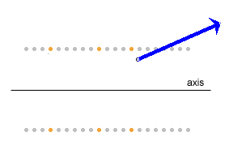
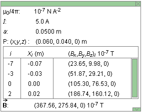

|
|
|
|
Click on a number to view the explanation of the corresponding item.


When the Loops toggle button is selected, you can select circular wire loops from a set of 21 coaxial loops. The loops are in a plane perpendicular to the screen and only the two points where a loop is intersecting the plane of the window are shown. The common axis of the set of coaxial loops is in the plane of the screen. It is taken to be the x-axis.
Unselected loops are shown in grey. To select a loop, click on either one of the two points where the loop intersects the screen. Selected loops are shown in a copper color. In the image above, three loops are selected and the two points where the left-most selected loop intersects the screen are indicated by black arrows.
The applet displays and calculates the resultant magnetic field vector (in blue) due to the current in all selected loops, at a field point whose position can be varied. (The Vector button needs to be selected for the field vector to be displayed.)
Clicking on a selected loop will deselect the loop.
All loops carry the same current. All loops have the same radius, and the spacing between any two neighboring loops is the same for any two such loops.
If the Loops button is not selected, the applet automatically selects all 21 loops and calculates and displays the resultant magnetic field due to the currents in all 21 loops.
To select several adjoining loops at once, select the Loops button, click with the mouse on one loop and drag over all loops you want to select.


The physical situation simulated by the applet is essentially three-dimensional. However, at field points in the plane of the screen the field vectors also lie in the plane of the screen if, as is the case in the applet, the current loops are perpendicular to the screen and the axis of the loops is in the screen. See the field point and magnetic field vector in the image below. Since the magnetic field has rotational symmetry around the common axis of the current loops, it is sufficient to show only the magnetic field in the plane of the screen.

The blue field vector is the resultant magnetic field vector due to the currents in all selected loops (three in the preceding image). The vector can be displayed/hidden by means of the Vector toggle button.
The field point can be moved anywhere in the window by clicking on it and dragging. Clicking elsewhere in the window will cause a second field point with field vector to be established at the point clicked, etc. The image at the very beginning of this Help document shows six field points and field vectors. Clicking on any existing field point with the mouse will make this the active field point and allow it to be dragged. The active field point and magnetic field vector at this point are shown in blue, the inactive ones in grey.

When this toggle button is selected, the magnetic field line through the active field point will be drawn in blue. However, since the computations required to draw a field line are extensive, it may take several seconds before the field line gets drawn completely. The time required to draw a field line depends on the field point and, of course, the speed of your computer. The speed with which the line is drawn can be increased, with a corresponding loss of accuracy, or decreased, with a corresponding gain of accuracy, by means of the Speed/Accuracy slider. See Point 11 below.
Dragging a field point that has a field line drawn through it will cause the field line to be dragged along. However, since a new field line has to be computed, it may take several seconds before the field line actually follows the point.
A pattern of several field lines can be drawn by clicking at a point, selecting the Field Line button to have the field line drawn, then clicking at another point, etc.

The calculation and drawing of a field line can take a number of seconds because of the large number of calculations involved. (See preceding Point 3.) Clicking the Stop button will stop these calculations before the entire field line is drawn. The Stop button is active only while a field line is being drawn.
Also, for certain field points, the calculation of the field line may not be accurate enough to create a closed field line. In that case, the program will continue calculating and may never stop unless the Stop button is clicked. If the field line does not close, one can click the Stop button and set the Speed/Accuracy slider (see Point 11) to a higher accuracy and repeat the calculation. If the accuracy setting is high enough, the field line will usually close.

The Grid toggle button lets you display/hide a coordinate grid with x and y axes.


The Data toggle button lets you display/hide the Data box shown above. The vertical dimensions of the box can be resized by dragging the green rectangle in the lower right-hand corner of the box up or down. The box can be closed by clicking on the little green box marked by an "X" in the upper right-hand corner. The box can be dragged to another location in the window by clicking anywhere else in the box and dragging. A green scroll bar inside the box allows scrolling through information about individual segments.
The Data box contains the following information.
 :
resultant magnetic field vector at given field point due
to the currents in all selected loops in units of 10-7 T
:
resultant magnetic field vector at given field point due
to the currents in all selected loops in units of 10-7 T

Resets the applet to its default setting.
The slider lets you to vary the radius a of the loops in the range from 1.0 cm to 20.0 cm, in steps of 0.1 cm.

The Current Slider allows you to vary the current between -10.0 A and 10.0 A, in steps of 0.1 A. This is the conventional current. The current is positive if its direction in the loops is counter-clockwise (positive sense) when the loops are viewed from the positive end of the x-axis, negative if the current direction is clockwise. Display the grid to view the direction of the x-axis.

The length of the arrow representing the magnetic field vector can be varied by means of this slider in a range from 1 to 1000, in steps of 1.

As discussed in Points 3 and 4 above, extensive calculations are required in drawing a field line. The calculations involve a numerical approximation whose accuracy can be improved by using more steps of smaller step size, with a corresponding increase in time required (and decrease in speed) to complete the calculations. The Speed/Accuracy slider allows you to adjust the point of this trade-off. The range of the slider is from 5/1 for maximum speed/minimum accuracy to 1/5 for minimum speed/maximum accuracy.